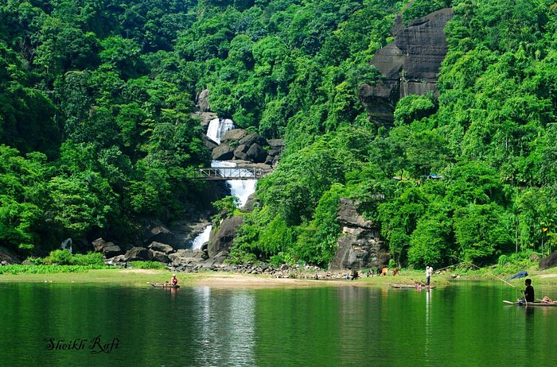
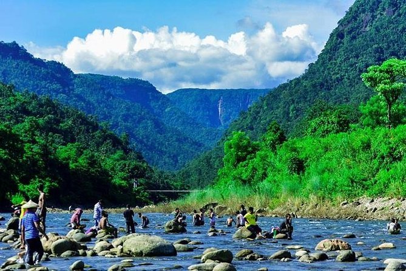

Photo Gallery




Sublime Text can now utilize your GPU on Linux, Mac and Windows when rendering the interface. This results in a fluid UI all the way up to 8K resolutions, all while using less power than before. ile tabs have been enhanced to make split views effortless, with support throughout the interface and built-in commands. The side bar, tab bar, Goto Anything, Goto Definition, auto complete and more have all been tweaked to make code navigation easier and more intuitive than ever. ile tabs have been enhanced to make split views effortless, with support throughout the interface and built-in commands. The side bar, tab bar, Goto Anything, Goto Definition, auto, Goto Definition, auto complete and more have all been tweaked to make code navigation easier and more intuitivr and more intuitive than ever. ile tabs have been enhanced to make split views effortless, with support throughout the interface and built-in commands. The side bar, tab bar, Goto Anything, Goto Definition, auto complete and more have all been tweaked to make code navigation easier and more intuitive than ever.ile tabs have been enhanced to make split views effortless, with support throughout the interface and built-in commands. The side bar, tab bar, Goto Anything, Goto Definition, auto complete and more have all been tweaked to make code navigation easier and more intuitive than ever.ile tabs have been enhanced to make split views effortless, with support throughout the interface and built-in commands. The side bar, tab bar, Goto Anythin complete and more have all been tweath support throughout the interface and built-in commands. The side bar, tab bar, Goto Anythin complete and more have all been tweaked to make code navigation easier and more intuitive than ever.ile tabs have been enhanced to make split views effortless, withr and more intuitive than ever. ile tabs have been enhanced to make split views effortless, with support throughout the interface and built-in commands. The side bar, tab bar, Goto Anything, Goto Definition, auto complete and more have all been tweaked to make code navigation easier and more intuitive than ever.ile tabs have been enhanced to make split views effortless, with support throughout the interface and built-in commands. The side bar, tab bar, Goto Anything, Goto Definition, auto complete and more have all been tweaked to make code navigation easier and more intuitive than ever.ile tabs have been enhanced to make split views effortless, with support throughout the interface and built-in commands. The side bar, tab bar, Goto Anythin complete and more have all been twea support throughout the interface and built-in commands. The side bar, tab bar, Goto Anything, Goto Definition, auto complete and more have all been tweaked to make code navigation easier and more intuitive than ever.ile tabs have been enhanced to make split views effortless, with support throughout the interface and built-in commands. The side bar, tab bar, Goto Anything, Goto Definition, auto complete and more have all been tweaked to make code navigation easier and more intuitive than ever.ile tabs have been enhanced to make split views effortless, with support throughout the interface and built-in commands. The side bar, tab bar, Goto Anything, Goto Definition, auto complete and more have all been tweaked to make code navigation easier and more intuitive than ever.


Dhaka is the capital city of Bangladesh, in southern Asia. Set beside the Buriganga River, it’s at the center of national government, trade and culture. The 17th-century old city was the Mughal capital of Bengal, and many palaces and mosques remain. American architect Louis Khan’s National Parliament House complex typifies the huge, fast-growing modern metropolisDhaka is the capital city of Bangladesh, in southern Asia. Set beside the Buriganga River, it’s at the center of national government, trade and culture. The 17th-century old city was the Mughal capital of Bengal, and many palaces and mosques remain. American architect Louis Khan’s National Parliament House complex typifies the huge, fast-growing modern metropolisDhaka is the capital city of Bangladesh, in southern Asia. Set beside the Buriganga River, it’s at the center of national government, trade and culture. The 17th-century old city was the Mughal capital of Bengal, and many palaces and mosques remain. American architect Louis Khan’s National Parliament House complex typifies the huge, fast-growing modern metropolisDhaka is the capital city of Bangladesh, in southern Asia. Set beside the Buriganga River, it’s at the center of national government, trade and culture. The 17th-century old city was the Mughal capital of Bengal,
 and many palaces and mosques remain. American architect Louis Khan’s National Parliament House complex typifies the huge, fast-growing modern metropolisDhaka is the capital city of Bangladesh, in southern Asia. Set beside the Buriganga River, it’s at the center of national government, trade and culture. The 17th-century old city was the Mughal capital of Bengal, and many palaces and mosques remain. American architect Louis Khan’s National Parliament House complex typifies the huge, fast-growing modern metropolisDhaka is the capital city of Bangladesh, in southern Asia. Set beside the Buriganga River, it’s at the center of national government, trade and culture. The 17th-century old city was the Mughal capital of Bengal, and many palaces and mosques remain. American architect Louis Khan’s National Parliament House complex typifies the huge, fast-growing modern metropolisDhaka is the capital city of Bangladesh, in southern Asia. Set beside the Buriganga River, it’s at the center of national government, trade and culture. The 17th-century old city was the Mughal capital of Bengal, and many palaces and mosques remain. American architect Louis Khan’s National Parliament House complex typifies the huge, fast-growing modern metropolisDhaka is the capital city of Bangladesh, in southern Asia. Set beside the Buriganga River, it’s at the center of national government, trade and culture. The 17th-century old city was the Mughal capital of Bengal, and many palaces and mosques remain. American architect Louis Khan’s National Parliament House complex typifies the huge, fast-growing modern metropolisDhaka is the capital city of Bangladesh, in southern Asia. Set beside the Buriganga River, it’s at the center of national government, trade and culture. The 17th-century old city was the Mughal capital of Bengal, and many palaces and mosques remain. American architect Louis Khan’s National Parliament House complex typifies the huge, fast-growing modern metropolisDhaka is the capital city of Bangladesh, in southern Asia. Set beside the Buriganga River, it’s at the center of national government, trade and culture. The 17th-century old city was the Mughal capital of Bengal, and many palaces and mosques remain. American architect Louis Khan’s National Parliament House complex typifies the huge, fast-growing modern metropolisDhaka is the capital city of Bangladesh, in southern Asia. Set beside the Buriganga River, it’s at the center of national government, trade and culture. The 17th-century old city was the Mughal capital of Bengal, and many palaces and mosques remain. American architect Louis Khan’s National Parliament House complex typifies the huge, fast-growing modern metropolisDhaka is the capital city of Bangladesh, in southern Asia. Set beside the Buriganga River, it’s at the center of national government, trade and culture. The 17th-century old city was the Mughal capital of Bengal, and many palaces and mosques remain. American architect Louis Khan’s National Parliament House complex typifies the huge, fast-growing modern metropolisDhaka is the capital city of Bangladesh, in southern Asia. Set beside the Buriganga River, it’s at the center of national government, trade and culture. The 17th-century old city was the Mughal capital of Bengal, and many palaces and mosques remain. American architect Louis Khan’s National Parliament House complex typifies the huge, fast-growing modern metropolisDhaka is the capital city of Bangladesh, in southern Asia. Set beside the Buriganga River, it’s at the center of national government, trade and culture. The 17th-century old city was the Mughal capital of Bengal, and many palaces and mosques remain. American architect Louis Khan’s National Parliament House complex typifies the huge, fast-growing modern metropolisDhaka is the capital city of Bangladesh, in southern Asia. Set beside the Buriganga River, it’s at the center of national government, trade and culture. The 17th-century old city was the Mughal capital of Bengal, and many palaces and mosques remain. American architect Louis Khan’s National Parliament House complex typifies the huge, fast-growing modern metropolisDhaka is the capital city of Bangladesh, in southern Asia. Set beside the Buriganga River, it’s at the center of national government, trade and culture. The 17th-century old city was the Mughal capital of Bengal, and many palaces and mosques remain. American architect Louis Khan’s National Parliament House complex typifies the huge, fast-growing modern metropolisDhaka is the capital city of Bangladesh, in southern Asia. Set beside the Buriganga River, it’s at the center of national government, trade and culture. The 17th-century old city was the Mughal capital of Bengal, and many palaces and mosques remain. American architect Louis Khan’s National Parliament House complex typifies the huge, fast-growing modern metropolisDhaka is the capital city of Bangladesh, in southern Asia. Set beside the Buriganga River, it’s at the center of national government, trade and culture. The 17th-century old city was the Mughal capital of Bengal, and many palaces and mosques remain. American architect Louis Khan’s National Parliament House complex typifies the huge, fast-growing modern metropolis
and many palaces and mosques remain. American architect Louis Khan’s National Parliament House complex typifies the huge, fast-growing modern metropolisDhaka is the capital city of Bangladesh, in southern Asia. Set beside the Buriganga River, it’s at the center of national government, trade and culture. The 17th-century old city was the Mughal capital of Bengal, and many palaces and mosques remain. American architect Louis Khan’s National Parliament House complex typifies the huge, fast-growing modern metropolisDhaka is the capital city of Bangladesh, in southern Asia. Set beside the Buriganga River, it’s at the center of national government, trade and culture. The 17th-century old city was the Mughal capital of Bengal, and many palaces and mosques remain. American architect Louis Khan’s National Parliament House complex typifies the huge, fast-growing modern metropolisDhaka is the capital city of Bangladesh, in southern Asia. Set beside the Buriganga River, it’s at the center of national government, trade and culture. The 17th-century old city was the Mughal capital of Bengal, and many palaces and mosques remain. American architect Louis Khan’s National Parliament House complex typifies the huge, fast-growing modern metropolisDhaka is the capital city of Bangladesh, in southern Asia. Set beside the Buriganga River, it’s at the center of national government, trade and culture. The 17th-century old city was the Mughal capital of Bengal, and many palaces and mosques remain. American architect Louis Khan’s National Parliament House complex typifies the huge, fast-growing modern metropolisDhaka is the capital city of Bangladesh, in southern Asia. Set beside the Buriganga River, it’s at the center of national government, trade and culture. The 17th-century old city was the Mughal capital of Bengal, and many palaces and mosques remain. American architect Louis Khan’s National Parliament House complex typifies the huge, fast-growing modern metropolisDhaka is the capital city of Bangladesh, in southern Asia. Set beside the Buriganga River, it’s at the center of national government, trade and culture. The 17th-century old city was the Mughal capital of Bengal, and many palaces and mosques remain. American architect Louis Khan’s National Parliament House complex typifies the huge, fast-growing modern metropolisDhaka is the capital city of Bangladesh, in southern Asia. Set beside the Buriganga River, it’s at the center of national government, trade and culture. The 17th-century old city was the Mughal capital of Bengal, and many palaces and mosques remain. American architect Louis Khan’s National Parliament House complex typifies the huge, fast-growing modern metropolisDhaka is the capital city of Bangladesh, in southern Asia. Set beside the Buriganga River, it’s at the center of national government, trade and culture. The 17th-century old city was the Mughal capital of Bengal, and many palaces and mosques remain. American architect Louis Khan’s National Parliament House complex typifies the huge, fast-growing modern metropolisDhaka is the capital city of Bangladesh, in southern Asia. Set beside the Buriganga River, it’s at the center of national government, trade and culture. The 17th-century old city was the Mughal capital of Bengal, and many palaces and mosques remain. American architect Louis Khan’s National Parliament House complex typifies the huge, fast-growing modern metropolisDhaka is the capital city of Bangladesh, in southern Asia. Set beside the Buriganga River, it’s at the center of national government, trade and culture. The 17th-century old city was the Mughal capital of Bengal, and many palaces and mosques remain. American architect Louis Khan’s National Parliament House complex typifies the huge, fast-growing modern metropolisDhaka is the capital city of Bangladesh, in southern Asia. Set beside the Buriganga River, it’s at the center of national government, trade and culture. The 17th-century old city was the Mughal capital of Bengal, and many palaces and mosques remain. American architect Louis Khan’s National Parliament House complex typifies the huge, fast-growing modern metropolisDhaka is the capital city of Bangladesh, in southern Asia. Set beside the Buriganga River, it’s at the center of national government, trade and culture. The 17th-century old city was the Mughal capital of Bengal, and many palaces and mosques remain. American architect Louis Khan’s National Parliament House complex typifies the huge, fast-growing modern metropolisDhaka is the capital city of Bangladesh, in southern Asia. Set beside the Buriganga River, it’s at the center of national government, trade and culture. The 17th-century old city was the Mughal capital of Bengal, and many palaces and mosques remain. American architect Louis Khan’s National Parliament House complex typifies the huge, fast-growing modern metropolisDhaka is the capital city of Bangladesh, in southern Asia. Set beside the Buriganga River, it’s at the center of national government, trade and culture. The 17th-century old city was the Mughal capital of Bengal, and many palaces and mosques remain. American architect Louis Khan’s National Parliament House complex typifies the huge, fast-growing modern metropolis